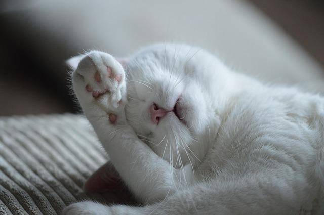
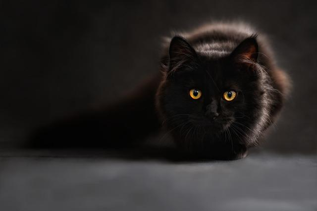

მოგესალმებით
მე გიყურებ...
კატებს არ უყვართ ცვლილება მათი თანხმობის გარეშე. კატებს შეუძლიათ თანამშრომლობა, როდესაც კარგად გრძნობს თავს კატის აზრითაც ყველაფერი კარგად არის. კატა ბუნებრივად ყველაზე დახვეწილი აღქმის არსებაა.
მე ვფიქრობ...

არსებობენ ადამიანები რომლები ძალით ან თავიანთი არგუნეტებით აყალიბებენ სამყაროს, მაგრამ კატა უბრალოდ წევს და ძინავს როცა სამყარო მშვიდად ყალიბდება ის ამ დროს ერგება გარემოს.
მე ვისვენებ...

ამ დროს არავინ იცის რა აქვთ გონებაში
და მე მძინავს..
კატები ყოველთვის ასოცირდებიან მთვარესთან. მთვარის მსგავსად, ისინი ღამით ცოცხლდებიან, გაურბიან კაცობრიობას და დახეტიალებენ სახლების თავზე, სიბნელეში გაბრწყინებული თვალებით.
ფერნანდ მერის ციტატა

ჩემი აზრით ღმერთმა იმიტომ შექმნა კატები რომ ადამიანების ლომის სიამოვნება ქონოდათ
კატები ზარმაცები არიან? მათ უფრო მეტი ძალაუფლება აქვთ.